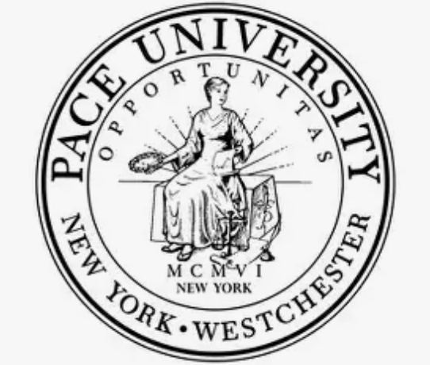
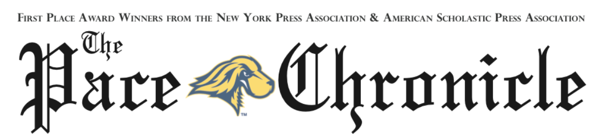
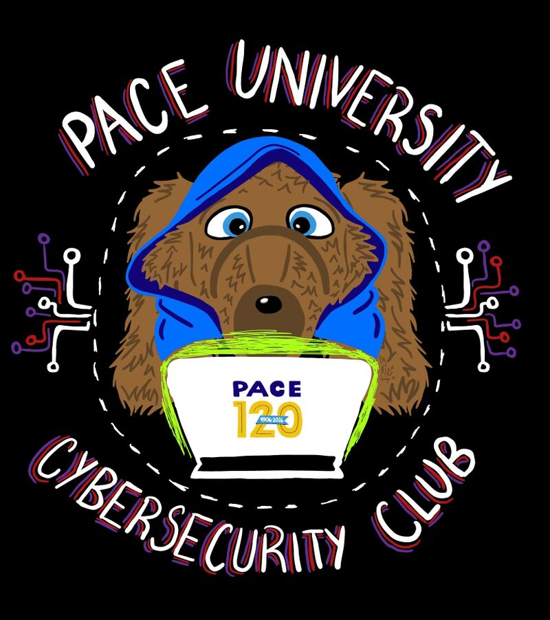
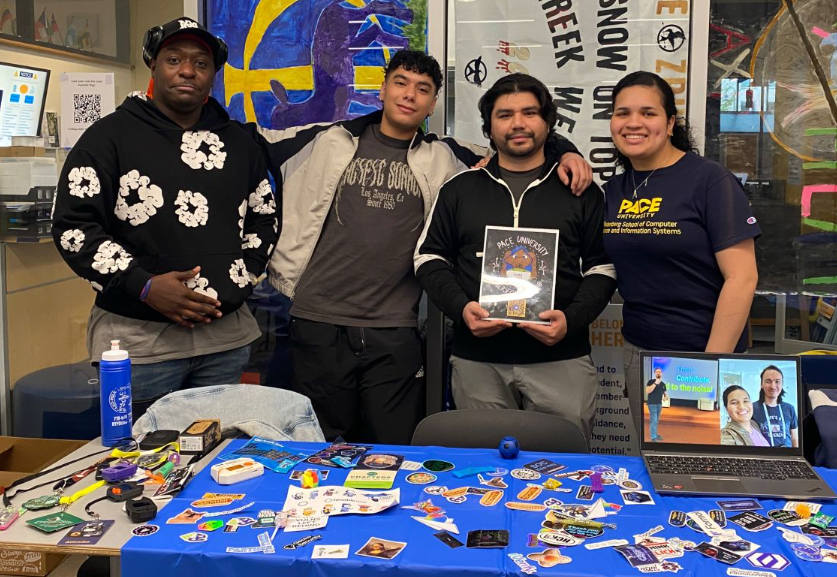

Summer Seidenburg Undergraduate Research (SSUR) Program
Faculty Mentor: Joe Acampora

Seidenberg offers qualified students who have completed their sophomore or junior year the opportunity to engage in research in areas ranging from human computer interaction and machine learning to forensic science and cybersecurity. Undergraduate students work with a research advisor in a team of 2-3 students. At the end of the summer, students present their research to the Seidenberg community. They are encouraged to present their work at other Pace University events as well as external conferences. They receive a stipend as part of the program.
Pace University - PLV Cybersecurity Club Secretary
Meet & Greet Cyber



On April 22nd, I had the opportunity to be part of the Cybersecurity Club Meet & Greet Tabling Event at Pace University’s Pleasantville campus! From 11:45 AM – 12:45 PM, we connected with fellow students with a total of 50 attendees, introduced the mission of the Cybersecurity Club, and shared how getting involved can open doors to hands-on learning, networking, and real-world cybersecurity experiences. Events like this are a great reminder of how student organizations foster collaboration, innovation, and professional growth across campus. A huge shoutout to our incredible E-Board for making this event happen:
• President: Adiel Vanegas-Robles
• Vice President: Brandon Tejada
• Treasurer: Tyler Coleman
• Secretary: Natasha Larencule (me)
I’m truly grateful to be part of such a passionate and driven team. Looking forward to building on this momentum and bringing even more exciting opportunities to campus in the upcoming Fall 2026 semester.
________________________________________________
BHS Summer Coding Camp 2025
Brewster Public Library Teen Volunteer


Facilitated computer programming lessons with the Summer Coding Workshop run by the Brewster High School Computer Science Club in partnership with Brewster Public Library
Gained teaching experience by explaining some of the basic concepts of computer programming to 5-7 year old kids through Code.org and 12-17 year old teens through Python Programming Language
Improved students’ understanding of fundamental programming such as for loops, methods, and variables in order for them to successfully complete each independent problem being given after each main lesson was completed

.jpg)
.jpg)
.jpg)
________________________________________________
Shinkansen Travel Experience Hackathon Participater
MIT IDSS Data Science & Machine Learning Program Student

Open from April 25th, 2025 to April 28th, 2025
Description: This problem statement is based on the Shinkansen Bullet Train in Japan, and passengers’ experience with that mode of travel. This machine-learning exercise aims to determine the relative importance of each parameter with regard to their contribution to the passengers’ overall travel experience. The dataset contains a random sample of individuals who travelled on this train. The on-time performance of the trains along with passenger information is published in a file named ‘Traveldata_train.csv’. These passengers were later asked to provide their feedback on various parameters related to the travel, along with their overall experience. These collected details are made available in the survey report labelled ‘Surveydata_train.csv’. In the survey, each passenger was explicitly asked whether they were satisfied with their overall travel experience or not, and that is captured in the data of the survey report under the variable labelled ‘Overall_Experience’. The objective of this problem is to understand which parameters play an important role in swaying passenger feedback towards a positive scale. You are provided test data containing the travel data and the survey data of passengers. Both the test data and the train data are collected at the same time and belong to the same population.
Goal: Predict whether a passenger was satisfied or not considering his/her overall experience of traveling on the Shinkansen Bullet Train.